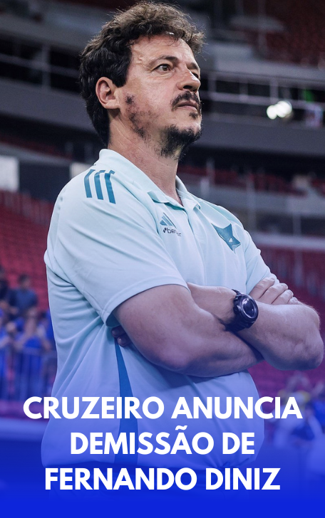

O Cruzeiro anunciou oficialmente, na manhã desta segunda-feira (27 de janeiro de 2025), a demissão de Fernando Diniz do comando técnico da equipe. A decisão foi tomada pela diretoria após uma série de resultados insatisfatórios e um rendimento abaixo das expectativas do clube. O treinador, que assumiu a equipe no início do segundo turno do Campeonato Brasileiro de 2024, acumulou um aproveitamento de apenas 35%, com 4 vitórias, 9 empates e 7 derrotas em 20 partidas. Essa performance resultou em intensas críticas por parte da torcida e, consequentemente, uma crescente pressão interna sobre a comissão técnica.
A demissão de Diniz não foi uma decisão isolada, pois o clube também dispensou o auxiliar Eduardo Barros e o preparador físico Wagner Bertelli, que faziam parte da sua comissão. A pressão pela mudança começou a se intensificar após o empate contra o Betim, na última rodada do Campeonato Mineiro, que refletiu o clima negativo envolvendo o trabalho de Diniz. Além disso, a diretoria do Cruzeiro já demonstrava insatisfação com o desempenho do time em competições anteriores, incluindo uma campanha decepcionante na final da Copa Sul-Americana e a ausência do time na vaga para a Libertadores de 2025.
Em meio ao cenário de instabilidade, o Cruzeiro anunciou que Wesley Carvalho, auxiliar técnico fixo da equipe, assumirá o comando interinamente enquanto a diretoria busca por um novo treinador. O principal nome na mira da diretoria celeste é Renato Gaúcho, que está livre no mercado desde sua saída do Grêmio no final de 2024. A expectativa é de que o time, agora sob a gestão interina, se recupere rapidamente e busque um novo rumo nas competições que se aproximam, com o Cruzeiro voltando a campo já nesta quinta-feira (30), contra o Itabirito, pela quarta rodada do Campeonato Mineiro.
